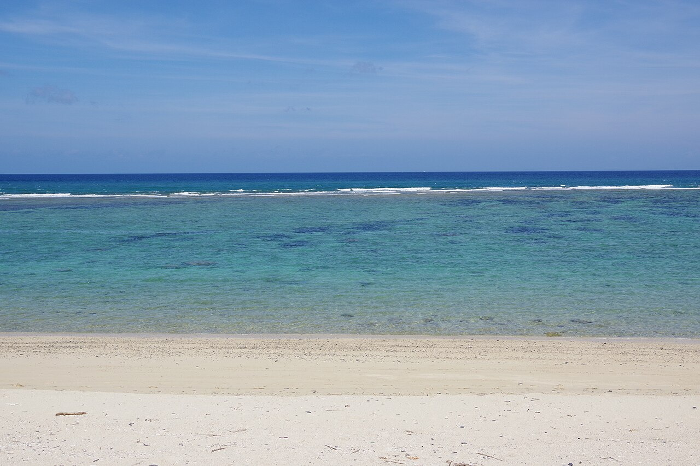
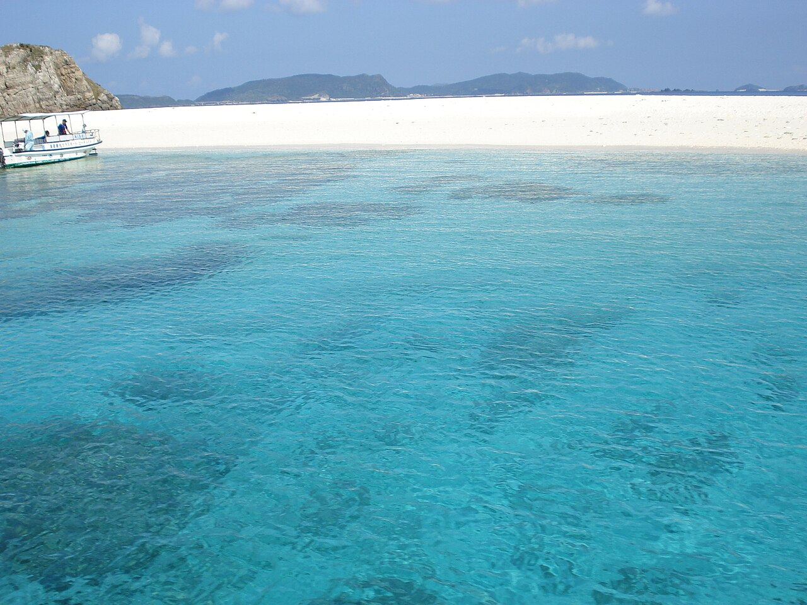
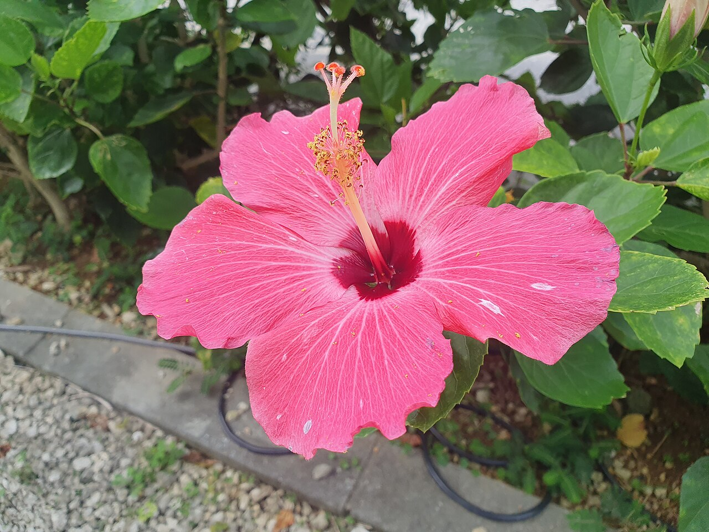
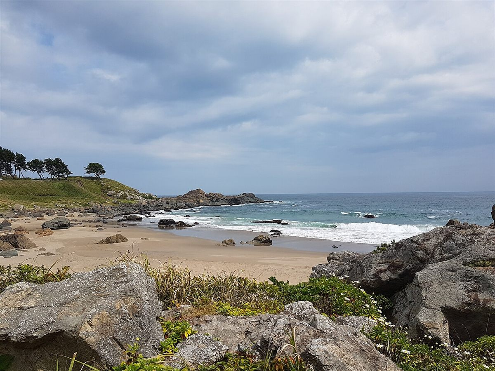
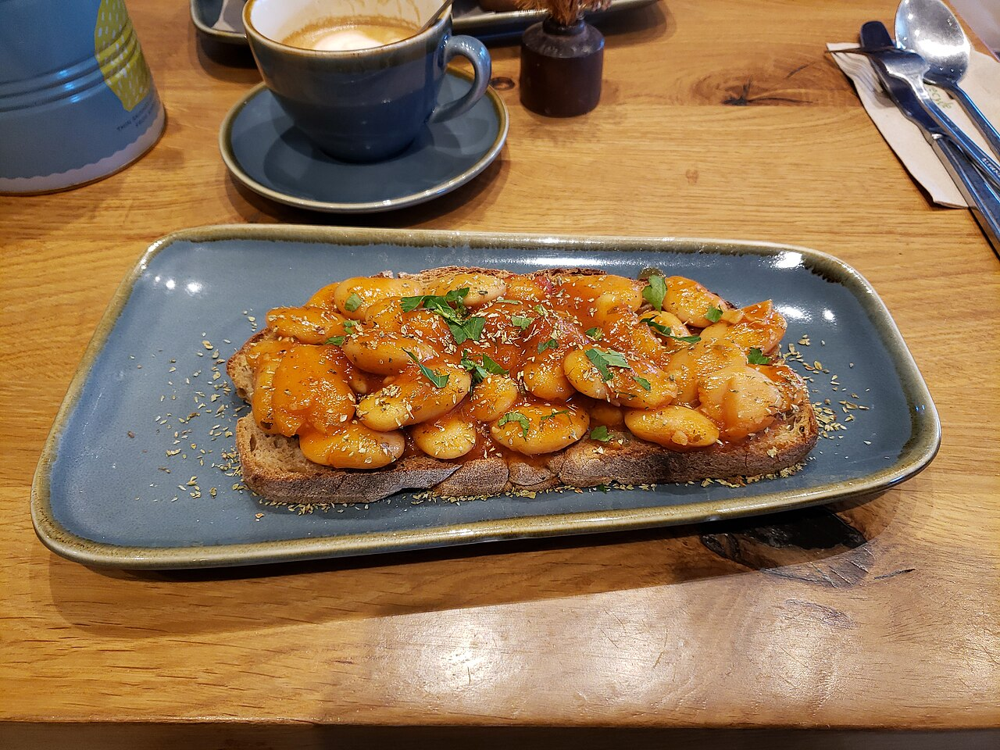
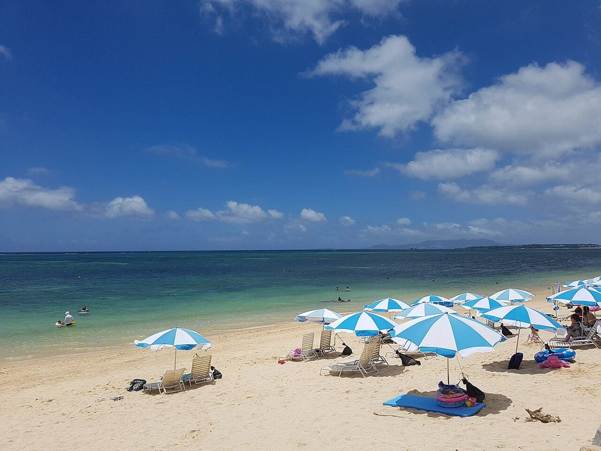

高知県香美市土佐山田町 / sup & surf & kitchen
HALO波を待つ朝も、遊んだあとの昼も。
南国の風が通るカフェ。
土佐山田駅から歩いて10分ほど。モーニングと手作りランチ、そしてサーフとSUPのあるお店です。
お店のこと
カフェとサーフが同じ屋根の下にある場所。
Instagramのプロフィールによると、HALOは「HALO sup&surf&kitchen」を名乗るお店で、「アットホームな南国カフェ」と紹介されています。王道モーニングと手作りランチを出すカフェに加えて、サーフィン、ウェットスーツのレンタル、SUP体験もハイライトに並びます。土佐山田駅から徒歩10分ほどとされています。
情報源: Instagram @halo_kochi(プロフィール)
「HALO」という店名の意味は確認できていません。このページの見出しや言い回しは制作側の表現で、お店の考えを示すものではありません。




メニュー
朝ごはんと、手作りランチ。
プロフィールには「王道モーニング・手作りランチ」とあります。具体的なメニュー・価格は確認できていないため、準備中としています。



写真はフリー素材の雰囲気イメージで、お店のメニューではありません。
口コミ
こんな声が聞こえてきそう。
イメージ例
朝ごはんを食べながら、窓の外の空を眺める時間がちょうどよさそうです。
イメージ例
サーフィンの前後に立ち寄れるカフェがあると、一日が長くなりそうですね。
イメージ例
手作りのランチで、ほっとひと息つける場所になりそうです。
この口コミは制作側が作ったイメージ例で、実在のお客様の声ではありません。


アクセス
お店の情報
| 所在地 | 〒782-0035 高知県香美市土佐山田町百石町１丁目６−２８ |
|---|---|
| 電話 | 準備中 |
| 営業時間 | Instagramのプロフィールには、カフェ7:30〜15:00、サーフ7:30〜17:00との記載があります(変更の可能性があるため、最新情報はInstagramでご確認ください) |
| 定休日 | 準備中 |
| 駐車場 | 準備中 |
| SNS | Instagram @halo_kochi |